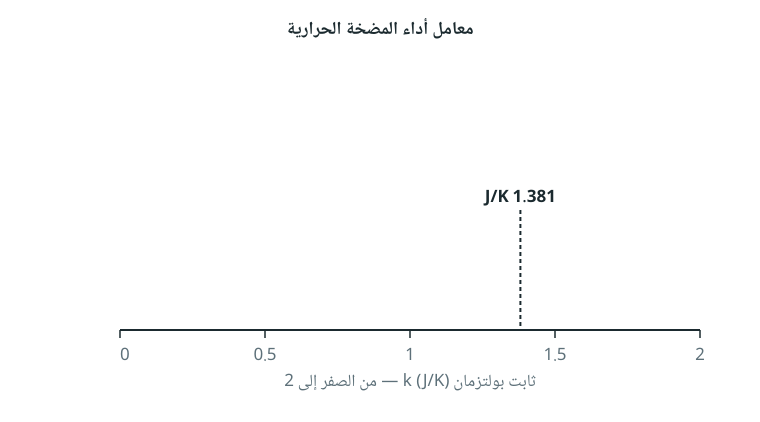

معامل أداء المضخة الحرارية
Heat pump coefficient of performance
معامل أداء المضخة الحرارية نسبة الحرارة المسلَّمة إلى الشغل المبذول، ويُرمز له COP. يتجاوز الواحد عملياً، وحدّه النظري الأعلى هو معامل أداء كارنو المقلوب.
معامل أداء المضخة الحرارية، ورمزه COP، هو نسبة الحرارة المسلَّمة إلى الفضاء المسخَّن إلى الشغل الميكانيكي المبذول في الدورة. وهو مقياس كفاءة لا يخضع لحدّ الواحد كما في المحركات الحرارية، لأن المضخة تنقل الحرارة من مصدر بارد إلى وسط أسخن ببذل شغل، ولا تولّد الحرارة من الشغل وحده. وحدّه النظري الأعلى هو معامل أداء دورة كارنو المقلوبة، ويساوي T_H/(T_H − T_C) بدرجات حرارة مطلقة. وكلما قلّ فرق الحرارة بين المصدر والوسط المسخَّن ارتفع المعامل، ولهذا تكون المضخات الحرارية الأرضية أكفأ من الهوائية في الشتاء البارد. مثال: مضخة حرارية تسلّم 4 kW حرارة إلى الغرفة مقابل 1 kW شغل كهربائي معامل أدائها 4، وحدّها النظري بين 273 K و293 K هو 293/20 = 14.65.
كيف تعمل الظاهرة؟
المضخة الحرارية تعمل بدورة تبريد مقلوبة الهدف: تسحب حرارة من مصدر بارد عند T_C، وترفعها إلى وسط ساخن عند T_H ببذل شغل ضاغط. وتحدث السحب في المبخّر حيث يتبخر المائع عند ضغط منخفض، ثم يُضغط البخار فيرتفع ضغطه ودرجة حرارته، ثم يتكاثف في المكثّف مسلّماً حرارته إلى الوسط الساخن، ثم يُخفَّض ضغطه بصمام تمدد فتنخفض درجة حرارته ويعود إلى المبخّر. والحرارة المسلَّمة إلى الساخن تساوي الحرارة المسحوبة من البارد زائد الشغل المبذول، ولهذا يتجاوز معامل الأداء الواحد: كل وحدة شغل تنقل أكثر من وحدة حرارة.
العلاقة بالأرقام
COP_HP = Q_H/W. وCOP_R = Q_C/W. وCOP_HP = COP_R + 1. والحدّ النظري COP_HP,max = T_H/(T_H − T_C) بدرجات مطلقة. مثال: T_C = 273 K، T_H = 293 K: COP_max = 293/20 = 14.65. ومضخة تسلّم 4 kW مقابل 1 kW: COP = 4. ولو كانت تسحب 3 kW من البارد وتستهلك 1 kW، فCOP_HP = 4 وCOP_R = 3، والفرق واحد صحيح.
مفاهيم متقاربة
معامل الأداء ليس الكفاءة: الكفاءة لا تتجاوز الواحد، ومعامل الأداء يتجاوزه لأن المقام شغل والمقام الآخر حرارة منقولة. وليس معامل أداء الثلاجة: الفرق واحد صحيح بالضبط. وليس كفاءة كارنو: كارنو للمحرك ومعامل الأداء المقلوب للمضخة. ولا يجوز مقارنة معاملات أداء بلا تصريح بدرجات الحرارة، لأن المعامل يعتمد عليها بشدة. ومعامل الأداء الموسمي يختلف عن المعامل اللحظي.
حدود التطبيق
معامل الأداء يعتمد بشدة على فرق الحرارة، فقيمة واحدة بلا ظروف قياس مضللة. وفي الطقس البارد جداً تنخفض قيمة المضخة الهوائية بشدة وقد تحتاج تسخيناً مساعداً. ولا يُقارن معامل أداء محسوب بحدّ نظري كأنه إنجاز، فالنسبة بينهما هي المؤشر. وفي أنظمة الامتزاز والامتصاص يُستعمل معامل أداء مختلف التعريف لأن المدخل حرارة لا شغل. ولا يُستعمل معامل الأداء لوصف أداء نظام تكييف كامل بلا احتساب المراوح والمضخات.

| الكمية | القيمة | المصدر |
|---|---|---|
| إنثالبي تبخير الماء عند 100 °م | 2256.4 kJ/kg | [2] |
المصادر
- 1 The International System of Units (SI), 9th edition (2019) — BIPM — Bureau International des Poids et Mesures (2019). www.bipm.org/en/publications/si-brochure · اطُّلع عليه 2026-11-21
- 2 NISTIR 5078: Thermodynamic Properties of Water — Tabulation from the IAPWS Formulation 1995 — NIST — National Institute of Standards and Technology (1998). nvlpubs.nist.gov/nistpubs/Legacy/IR/nistir5078.pdf · اطُّلع عليه 2026-11-21
- 3 CODATA Value: Stefan-Boltzmann constant — NIST — CODATA 2022 recommended values (2024). physics.nist.gov/cgi-bin/cuu/Value?sigma · اطُّلع عليه 2026-11-21
استشهد بهذا المصطلح
الصيغتان مبنيتان من بيانات الصفحة نفسها: العنوان والتاريخ ورابط النسخة المنشورة.
معامل أداء المضخة الحرارية — Heat pump coefficient of performance. (2026). ديوان المعرفة — انفراد. https://infiradev.com/diwan/terms/term-cop-heat-pump.html
@misc{term-cop-heat-pump2026,
title = {معامل أداء المضخة الحرارية},
titleaddon = {Heat pump coefficient of performance},
howpublished = {{ديوان المعرفة — انفراد} — مرجع علمي عربي},
year = {2026},
url = {https://infiradev.com/diwan/terms/term-cop-heat-pump.html},
urldate = {2026-11-26},
note = {مراجعة علمية: hermes (مراجعة معتمدة 2026-11-26)}
}
راجعه: hermes (مراجعة معتمدة 2026-11-26) · 2026-11-26 · آخر تحديث 2026-11-21